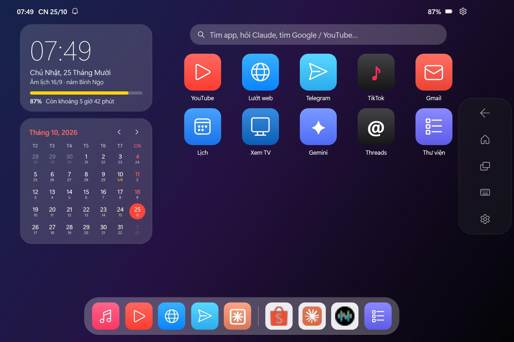
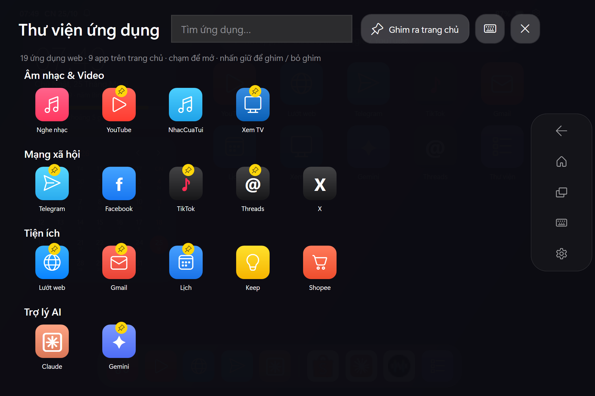
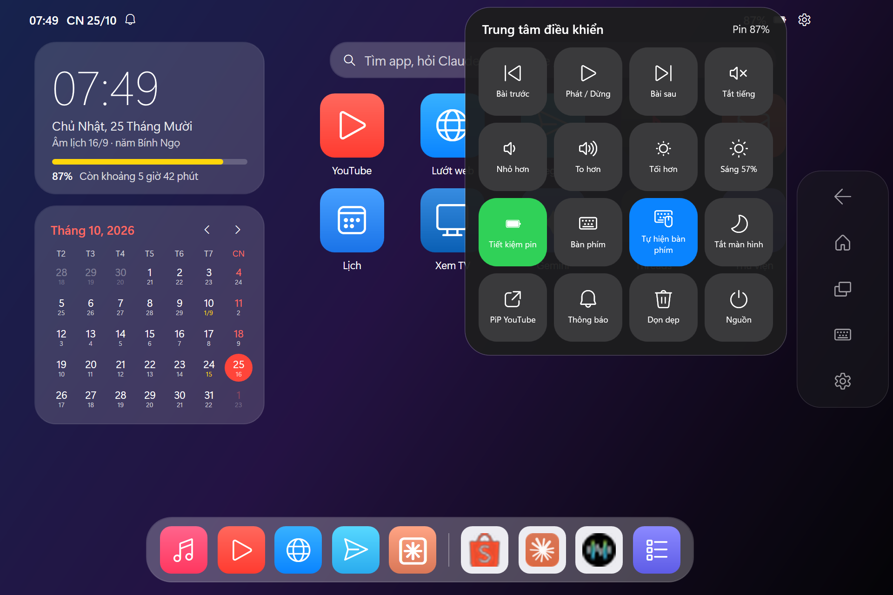
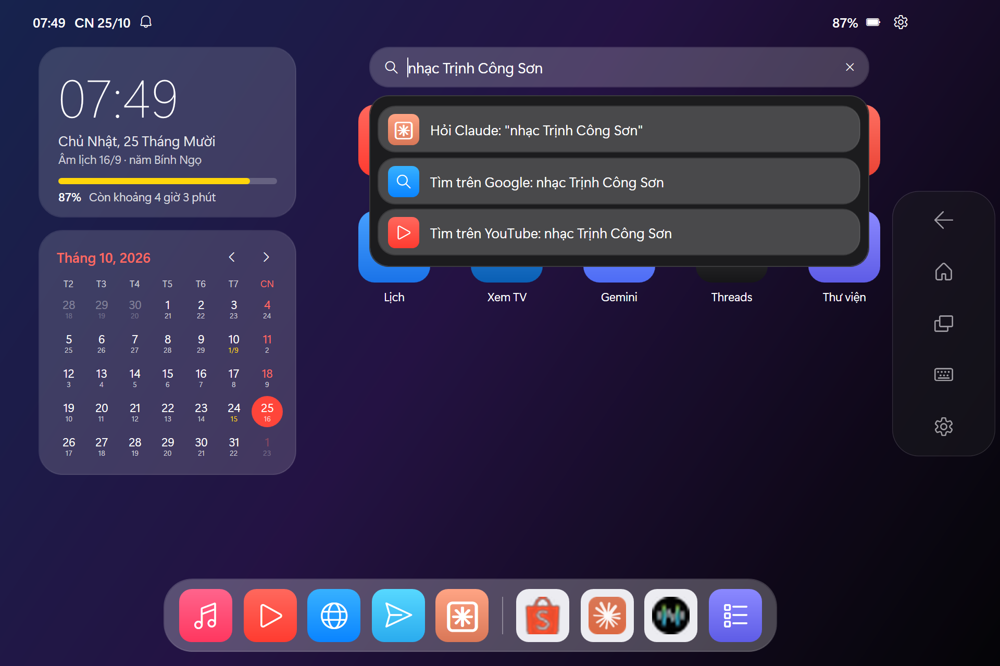

Biến máy Windows cảm ứng
thành máy tính bảng
Turn your Windows touch PC
into a tablet
Màn hình chính kiểu iPad, Dock, Thư viện ứng dụng, Trung tâm điều khiển, đa nhiệm, PiP YouTube, lịch âm, tiết kiệm pin — và để Claude điều khiển máy bằng lời nói thường ngày. An iPad-style home screen, Dock, App Library, Control Center, multitasking, YouTube picture-in-picture, battery saving — and let Claude drive your device in plain language.
Windows 10 / 11 · Giấy phép MIT · Windows báo "Application Control policy has blocked"? Tải bản ZIP rồi chạy ChayLauncher.cmd
Windows 10 / 11 · MIT license · Blocked by "Application Control policy"? Get the ZIP and run ChayLauncher.cmd

Mọi thứ của một chiếc máy tính bảngEverything a tablet should have
Tối ưu cho cảm ứng: nút lớn, vuốt, nhấn giữ — và nhẹ nhàng với pin. Built for touch — big targets, swipes, press-and-hold — and gentle on the battery.
Màn hình chính & DockHome screen & Dock
Widget đồng hồ, pin và lịch tháng có âm lịch. Dock với app yêu thích và app vừa dùng. Clock, battery and month-calendar widgets (with the Vietnamese lunar calendar). A Dock with favorites and recent apps.
Thư viện ứng dụngApp Library
Web app chia nhóm. Vuốt sang trái để mở, nhấn giữ để ghim ra trang chủ. Web apps grouped by category. Swipe left to open, press and hold to pin to home.
Trung tâm điều khiểnControl Center
Nhạc, âm lượng, độ sáng, tiết kiệm pin, bàn phím, tắt màn hình — nổi trên mọi app. Media, volume, brightness, battery saver, keyboard, screen off — floating over any app.
Đa nhiệm mượtSmooth multitasking
Thanh điều hướng nổi (Quay lại · Home · Đa nhiệm) và thẻ xem trước trực tiếp từng cửa sổ. A floating nav bar (Back · Home · Recents) and live preview cards for every window.
PiP YouTubeYouTube PiP
Thu video thành khung nổi bo góc ở góc màn hình, vừa xem vừa làm việc khác. Shrink a video into a rounded floating player in the corner while you do other things.
Bàn phím cảm ứngTouch keyboard
Tự bật khi chạm ô nhập chữ — cứu cánh khi bàn phím vật lý bị hỏng. Pops up automatically in text fields — a lifesaver when the physical keyboard is broken.
Tiết kiệm pinBattery saving
Chế độ hiệu suất năng lượng cao nhất, dọn app nền thừa; launcher tự chạy EcoQoS. Best-efficiency power mode, background app cleanup; the launcher itself runs under EcoQoS.
Tìm kiếm & ClaudeSearch & Claude
Tìm app, hỏi Claude, tìm Google / YouTube ngay trên trang chủ. Có MCP để Claude điều khiển máy. Find apps, ask Claude, search Google / YouTube from the home screen. Plus an MCP server for Claude.
Ảnh chụp thậtReal screenshots
Chạm vào ảnh để xem lớn.Tap an image to enlarge.



Bắt đầu trong 1 phútUp and running in a minute
Không cần quyền admin, không cài thêm phần mềm.No admin rights, no extra software.
Tải vềDownload
Bấm Tải TouchLauncher.exe ở trên. Chỉ một tệp, không cần cài đặt. Click Download TouchLauncher.exe above. One file, nothing to install.
ChạyRun
Bấm đúp TouchLauncher.exe. Nếu SmartScreen cảnh báo, chọn More info → Run anyway. Launcher mở toàn màn hình.
Double-click TouchLauncher.exe. If SmartScreen warns, choose More info → Run anyway. It opens full-screen.
Tự chạy khi mở máyStart with Windows
Nhấn Win + R, gõ shell:startup, rồi đặt một shortcut của TouchLauncher.exe vào thư mục vừa mở. Nếu chạy từ mã nguồn thì dùng:
Press Win + R, type shell:startup and drop a shortcut to TouchLauncher.exe there. From source, use:
powershell -ExecutionPolicy Bypass -File CaiDat.ps1 -AutoStartTuỳ chỉnh app trong launcher.config.jsonCustomize apps in launcher.config.json
Thêm bất kỳ trang web nào thành một app riêng, toàn màn hình: Turn any website into a standalone, full-screen app:
{ "group": "Tiện ích", "name": "Zalo", "icon": "Z", "color": "#0068FF",
"type": "app", "target": "https://chat.zalo.me", "match": "Zalo" }Để Claude điều khiển máyLet Claude drive your tablet
Dự án kèm một MCP server (Python thuần, không cần pip). Đăng ký với Claude Desktop bằng một lệnh, rồi chỉ việc nói.
The project ships an MCP server (pure Python, no pip). Register it with Claude Desktop in one command, then just ask.
powershell -ExecutionPolicy Bypass -File CaiMCP.ps1open_appsearchmediaset_brightnessget_status
switch_windowclose_windowgo_homeopen_notifications
Câu hỏi thường gặpFAQ
Có an toàn không? Có gửi dữ liệu đi đâu không?Is it safe? Does it send data anywhere?
Không. Launcher không có máy chủ, không thu thập dữ liệu. Mọi thứ chạy trên máy bạn và mã nguồn công khai để ai cũng kiểm tra được. No. There is no server and no telemetry. Everything runs locally, and the source is public for anyone to audit.
Windows báo "An Application Control policy has blocked this file"?"An Application Control policy has blocked this file"?
Đó là Smart App Control của Windows 11: nó chặn hẳn mọi exe chưa được ký số, không có nút chạy tiếp. Hãy tải bản ZIP, giải nén và bấm đúp ChayLauncher.cmd — launcher chạy bằng script PowerShell nên không bị chặn, đầy đủ tính năng.
That is Windows 11 Smart App Control, which blocks every unsigned exe with no way to continue. Download the ZIP, extract it and double-click ChayLauncher.cmd — it runs the PowerShell script, which is not blocked, with every feature.
Windows SmartScreen cảnh báo khi mở exe?SmartScreen warns when opening the exe?
Exe chưa được ký số (chứng chỉ ký mã tốn phí) nên Windows chưa "quen" tệp này. Chọn More info → Run anyway. Mã nguồn exe nằm ở src/TouchLauncher.cs; bạn có thể tự build bằng build.ps1.
The exe is not code-signed (certificates cost money), so Windows does not recognize it yet. Choose More info → Run anyway. The exe source is src/TouchLauncher.cs; you can build it yourself with build.ps1.
Chạy từ mã nguồn, Windows báo chặn script PowerShell?Running from source and Windows blocks the script?
Hãy chạy bằng ChayLauncher.cmd — tệp này tự dùng -ExecutionPolicy Bypass cho riêng launcher, không đổi cài đặt bảo mật của máy. Nếu tải ZIP, có thể bấm chuột phải tệp ZIP → Properties → Unblock trước khi giải nén.
Start it with ChayLauncher.cmd, which uses -ExecutionPolicy Bypass for the launcher only and leaves system settings alone. For the ZIP, you can right-click it → Properties → Unblock before extracting.
Dùng trình duyệt nào?Which browser does it use?
Mặc định là Google Chrome (để đồng bộ tài khoản Google). Đổi sang Edge bằng "browser": "edge" trong cấu hình.
Google Chrome by default (for Google account sync). Switch to Edge with "browser": "edge" in the config.
Thoát launcher thế nào?How do I quit the launcher?
Mở Trung tâm điều khiển → Nguồn → Thoát launcher. Ở đó cũng có Tắt máy, Khởi động lại và Ngủ. Open Control Center → Power → Exit launcher. Shut down, Restart and Sleep live there too.